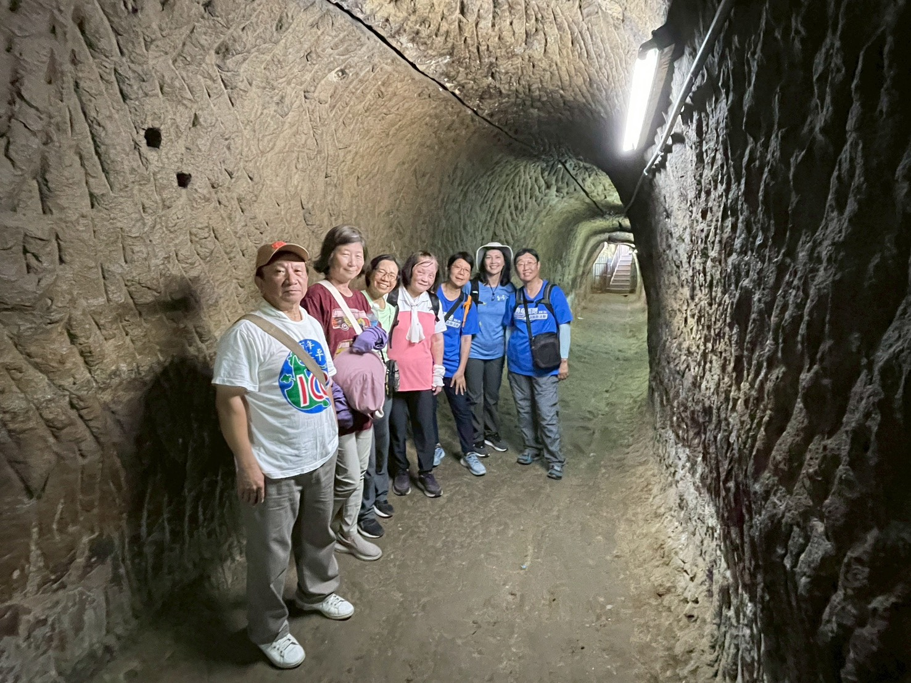
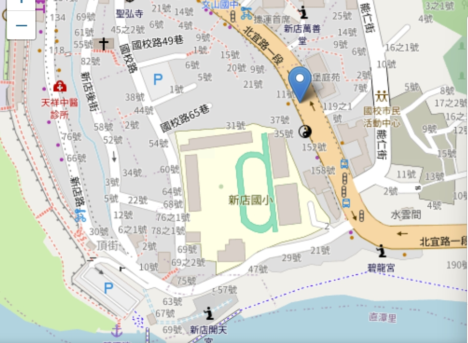
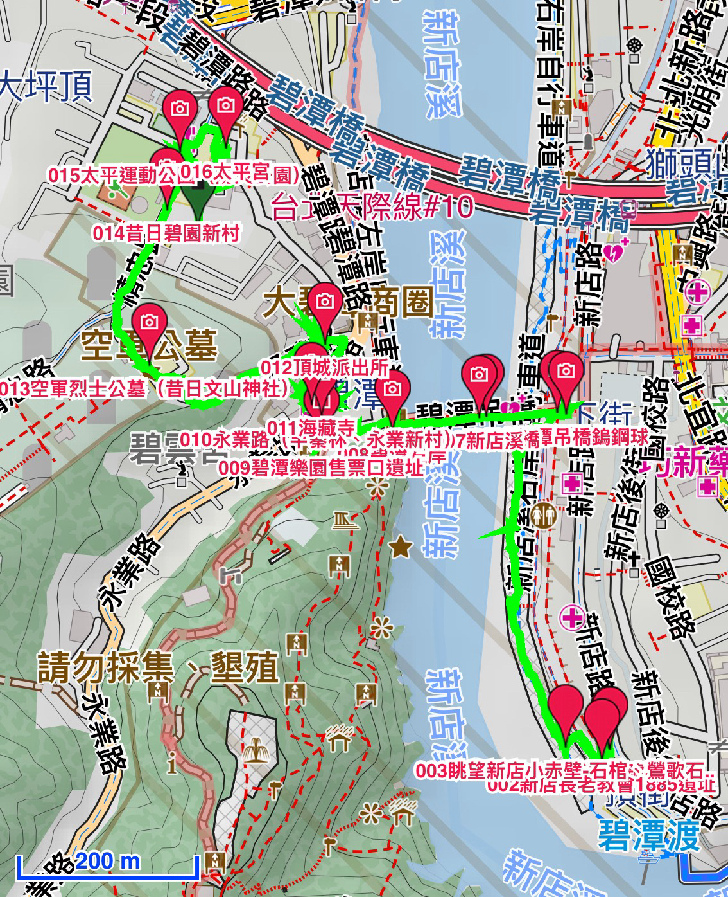
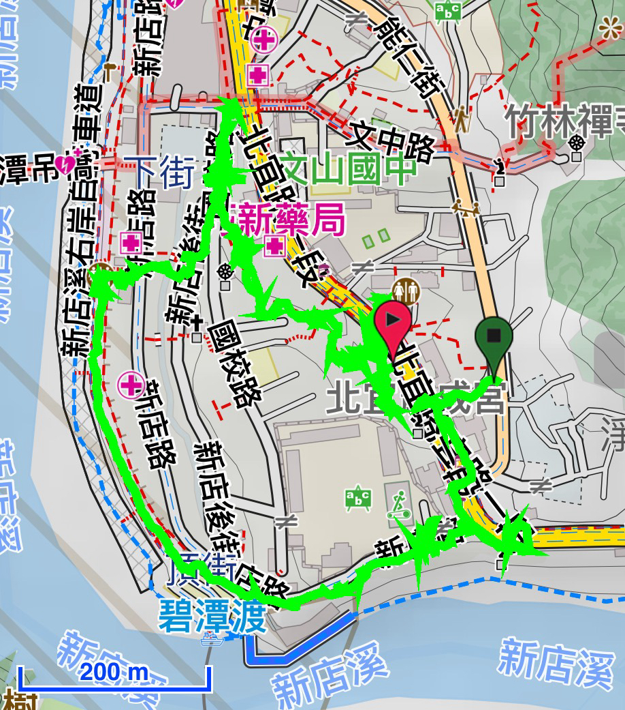
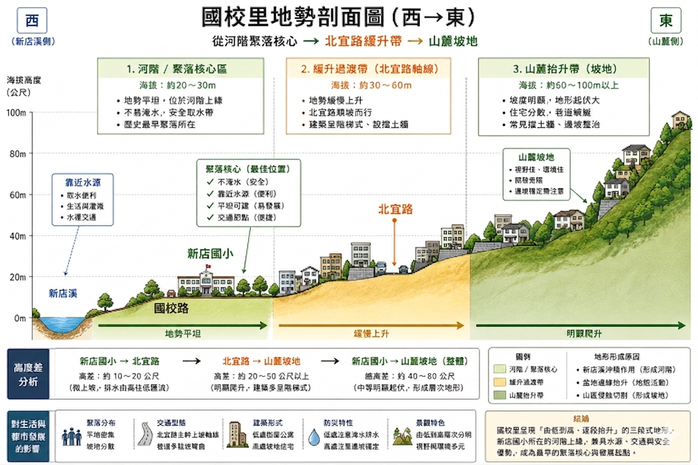
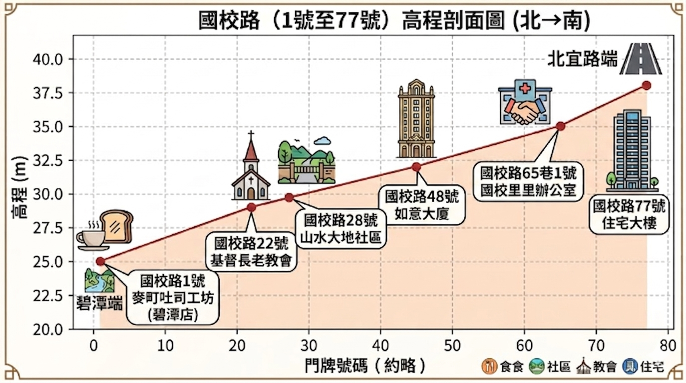
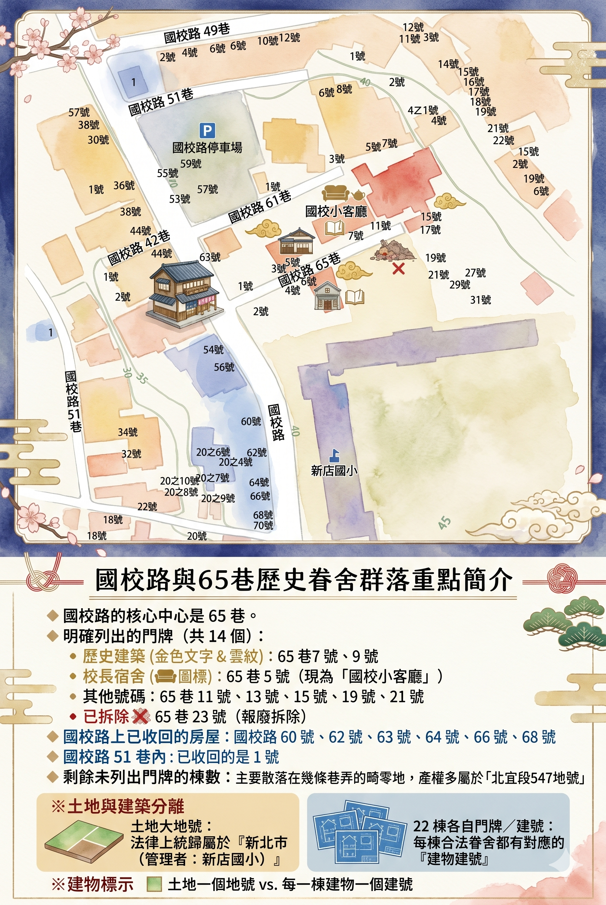
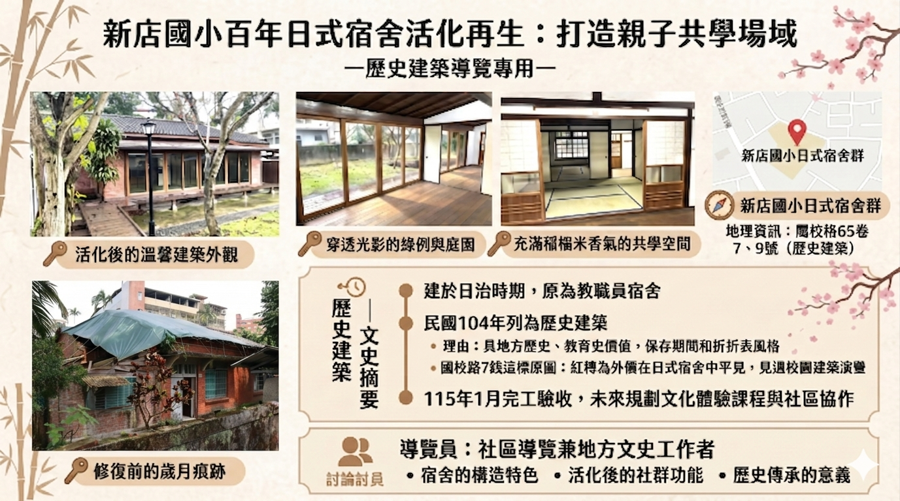

河川與圳道的低語
新店溪、大坪林圳、瑠公圳與碧潭，串起童年戲水、灌溉、洪水與護岸工程。

走入地方
首次走入國校里，是為認識新店溪畔一段被日常包裹的歲月痕跡。隨著老師的腳步，穿過街巷、屋簷與河岸，聽那些老地方在人的口述裡娓娓道來：一條路如何曾經承載官邸與宿舍，一段水圳如何滋養生活，一座城市又如何在煤炭、渡船、台車與街市之間漸漸繁盛。
站在今日的新店溪邊回望，入眼盡是水碧山青、街市往來；不覺間，目光卻會游移到那些不再醒目的痕跡上。國校路的門牆裡，藏著政軍人物與教師家庭的居住身影；新店後街的記憶裡，仍有孩子在清澈圳水中嬉戲；菜苗街的老店門口，彷彿還留著泥土、種子與農事的氣味。繁華曾經由河水載來，也曾因時代轉身而悄悄遠去。
許多往事，常是在一次停步、一句閒談、一張照片被重新打開時，才慢慢回到我們眼前。這些紀錄珍貴的地方，不在於急著給地方下結論，而是陪著老師、同伴與在地居民一起聆聽、查找、確認，也一起把被時間蓋住的生活細節輕輕拾回來。從郭里長的口述，到 65 巷老屋菜園、新店後街水圳、明治煤礦與新店溪畔的凝望，每一頁都像在替這片土地留一盞溫柔的燈，讓後來的人還能循著光，找到自己與地方相連的路。
新店溪、大坪林圳、瑠公圳與碧潭，串起童年戲水、灌溉、洪水與護岸工程。
明治煤礦、和美煤礦、台車道與運煤路徑，讓產業記憶回到街道、岸畔與山邊。
宿舍、官邸、老屋、菜園與巷弄，共同構成戰後聚落與居民生活的層次。
里長、耆老、店家與同伴的紀錄，讓地方不只是地圖上的名稱，也成為一段段有人記得、有人說起的生活。
沿路翻讀
每一段紀錄，都像走讀途中一次專注的凝望。有人聲，有水聲，有老屋的陰影，也有照片留下的光。順著這些篇章讀去，彷彿從吊橋上環顧溪水，再慢慢轉入後街與國校路的巷弄，看見這片地方的興盛、轉折與幾許落寞。
👉 下方每一張紀錄卡都可以點入詳看。請順著一頁頁田野筆記，慢慢走入國校路、新店後街與水岸邊那些仍有溫度的地方故事。
從新店後街、碧潭水岸、防空洞到劉大嫂的口述風華，五篇文字像沿著巷弄展開的地方長卷，讓散落的記憶有了可以停下來閱讀的位置。
里長的口述像一盞燈，照見國校路不只是道路，也曾是官邸、台車道、礦坑、河岸與地方治理交會之處。
65 巷筆直如箭地伸入國校路旁，老宿舍、紅磚屋與鐵皮屋頂曾在街景裡相互依偎；透過今昔對照，那些被拆除、被遮掩、被重新辨認的門牌與屋影，又像從巷底輕輕回到眼前。
一處老屋、一方菜園，牽出教師宿舍、老兵居所、地下通道與土地承租，也牽出居民把此地當成家的深情。
劉家夫婦的記憶把後街帶回清澈水圳、孩子戲水、防空洞納涼的年代，也帶回煤炭與碧潭相依的生活痕跡。
一間種苗店仍守在北宜路邊，讓人看見農業補給的舊時光，也看見種植知識如何在城市縫隙裡延續。
礦字與圖資像地底傳來的微光，讓遠去的明治煤礦仍能在紙上、路上與想像裡浮現輪廓。
一排宿舍與幾面門牌，讓學校、教師家庭、日式建築與街區日常重新被看見。
國校路的官邸與宿舍，讓戰後年代的風聲仍停在門牆之間，帶著權力、遷徙與居住的陰影與光。
淑美的文字像一段河岸凝望，把煤礦、摩天嶺、新店溪與記憶可能流失的感傷，輕輕連在一起。
摩天嶺的坡地屋舍，從國有地、水利地、道路拓寬到地下六層的特殊結構，照見新店溪畔居民安身立命的智慧。
從菜苗店集合出發，沿著礦業遺址、輕便路、後街、宿舍群與摩天嶺行走，把地形、口述與課堂提醒收成一份完整紀錄。
跟著劉大嫂的話語走到溪畔，門前水圳、防空洞、碧潭戲水與水下尋煤，都像從舊日水聲裡輕輕傳來。
走讀地圖
地圖把腳步留下來，也把地方故事安放在可以再次辨認的位置上。從國校路到新店後街，從碧潭水岸到舊煤礦與台車道的線索，每一條路徑都像替記憶畫下一道溫柔的標記。



圖像補記
這組圖像由淑敏運用 AI 製作。她將走讀途中不斷浮現的疑問與發現，從地勢高低、街巷轉折，到宿舍位置與今昔變化，化成一張張可以停下來細看的圖。那些原本藏在坡度裡、門牌間、老屋旁的線索，因為圖像而變得親近；彷彿有人陪著我們重新走一趟國校路，沿著河岸、坡地與巷弄，把地方曾經的生活與記憶，溫柔地說給大家聽。




田調記憶
這裡每一頁都留有田野的氣息與聲音。照片與文字並立，讓看見與聽見在此停留。這份紀錄，也將隨著作品與影像，繼續生長。
跟隨帶路人翁東源先生與啟川大哥探尋昔日運煤軌道、捲揚機紅磚牆與「四崁仔」收發登記處的地景變遷。
從陡坡上的老兵違建與風塵歲月，到歷經納莉颱風土石流後的鋼樁改建，探尋地下六層磐石建屋的獨特地景。
跨越傳習所、公學校到國民學校的四階段興學歷程，看見地方仕紳民眾熱心捐資與寄附勞力開闢校園的深厚厚意。
透過日治時期官方出願與相續檔案，釐清大坪林地界重疊與侵掘糾紛，看見明治煤礦紙上版圖整合的角力過程。
從廢除墓地建校、引進烏來櫻花闢建新店公園，到馬偕博士德式教堂的興毀與重建，記錄這片高地百年來的地景與人文變遷。
民國47年11月美國巴萊特滑水團在碧潭的精湛水上表演，激盪起層層銀白水花，遙想「小赤壁」碧潭昔日水源之豐沛與山影疊翠。
走讀青潭溪與新店溪匯流處、斗門頭水圳地名與開天宮引水石硿，看見岩壁上古人鑿敲槌打的印記與消逝水圳的懷想。
民國六十年代背著書包沿碧潭河堤嬉鬧上學，穿過新店路布店與餅舖，爬上後街通學橋陡坡衝向校門的純樸童年記憶。
撫過斑駁的岩壁與白色碳酸鈣結晶，走入開天宮引水石硿，重溫兩百多年前漢人先民在生死一線、出草陰影下，持槍開挖古隧道的剛毅歷史。